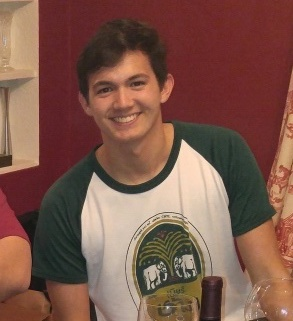

About Me

This is text filler, please don't judge me. What's up yo? My name is in the top left of the screen, of course. I guess that's pretty much all there is to say. jk, I have interests and do things, ya know, being a human being and all. Three things that I do: play tennis, eat noodles, drink beer. Three things I do not do: play Fifa, eat shark fin soup, wear nice clothes. I also graduated from Northeastern University in 2017, where I studied Business.
I moved to LA quite recently and it's been just wonderful so far. The foliage out here is quite different from out east. It's nice how there are palm trees and fruit trees, etc. here, but I do miss the lush greenery during the summer on the east coast-- forests overflowing with tangles of bushes and branches and leaves and weeds (ya know, classic plant life stuff #plantlife #stuff). I think that'll do it for now. After all, I'm here to learn to code, not to compose poorly-written paragraphs about plants and such. Nothing against plants by the way; plants are chill. Especially snap dragon flowers.
What else is going on these days? I've been eating tons of oranges, which has been nothing short of spectacular. My sister just graduated from college and she's off to the west coast as well come August. Hm, back to food. I've been cooking a lot of egg whites recently and I just made this gnarly portion of cabbage with ~azn flavors~ which ruled. Fun fact about egg whites-- if you want to turn a pizza slice into a semi-healthy-ish (but still vvv tasty) meal, you can cook a bunch of egg whites flat on a pan then cookie cutter them to fit onto a slice of pizza. Then you can throw some arugula on top and you're good to go. Eating one or two of those is a whole lot better than eating like 6 normal slices of Papa Jawn's pizza in one sitting, which - let's be real - we've all done.